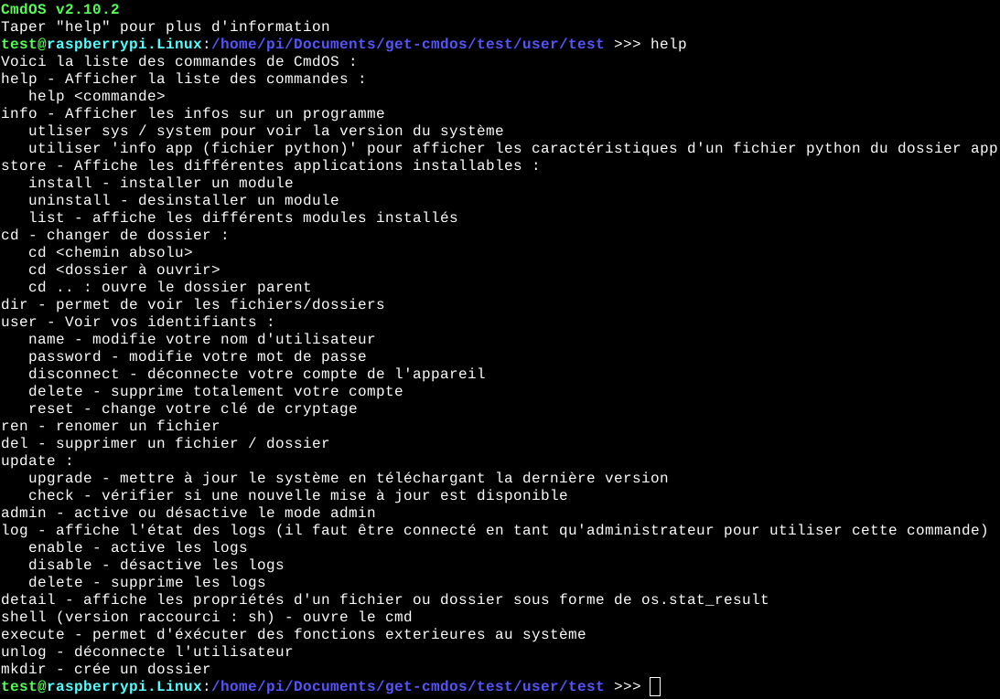
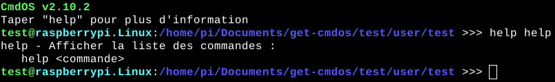

La commande help vous permet d'afficher l'aide de CmdOS.
Ele dispose de deux syntaxes, la première est "help" et voici son résultat :
Cette commande affiche toutes les commandes avec leur arguments possibles et leur descriptif.
La deuxième syntaxe est : "help nom_de_la_commande" :
